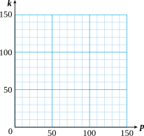

Section 1 Variables
Worksheet Section 1.1
Activity 1.1. Reading a Graph.
The graph shows the U.S. unemployment rate during the years surrounding the Great Depression.
a.
What was the unemployment rate in 1930?
b.
When did the unemployment rate first reach 15%?
c.
When did the unemplyment rate reach its highest value? What was the unemployment rate at that time?
d.
After 1930, when was the first time the unemployment rate fell below 10%?
e.
During which year did the unemployment rate show the greatest increase? During which year did it show the greatest decrease?
f.
Complete the table:
Year |
Unemploy-ment Rate |
Labor Force (millions) |
Number Unem-ployed |
Year |
Unemploy-ment Rate |
Labor Force (millions) |
Number Unem-ployed |
| 1929 | 48.0 | 1936 | 53.3 | ||||
| 1930 | 48.8 | 1937 | 54.1 | ||||
| 1931 | 49.6 | 1938 | 54.9 | ||||
| 1932 | 50.3 | 1939 | 55.6 | ||||
| 1933 | 51.1 | 1940 | 56.2 | ||||
| 1934 | 51.9 | 1941 | 57.5 | ||||
| 1935 | 52.6 | 1942 | 60.4 |
g.
During which year did the number of unemployed workers increase the most?
Activity 1.2. Writing Mathematical Sentences.
-
Barry lives with his aunt while he attends college. Every week he gives her $20 from his paycheck to help pay for groceries. Fill in the table:
Barry's paycheck 45 60 75 100 125 \(p\) Calculation \(45-20\) \(\hphantom{60-20 }\) \(\hphantom{75-20 }\) \(\hphantom{100-20 }\) \(\hphantom{125-20 }\) \(\hphantom{p - 20 }\) Amount he keeps \(25\) Explain in words how to find the amount Barry keeps from his paycheck.
-
Write your explanation as a mathematical sentence:
\begin{equation*} \text{Amount he keeps} =\phantom{Amount he keeps} \end{equation*} Let \(p\) stand for the amount of Barry's paycheck and \(k\) for the amount he keeps. Write an equation for \(k\) in terms of \(p\text{.}\)
Plot the points from the table and connect them with a smooth curve.
 -
Liz makes $6 an hour as a tutor in the Math Lab. Her wages for the week depend on the number of hours she works. Fill in the table.
Hours worked 3 5 6 8 15 \(h\) Calculation \(6 \times 3\) \(\hphantom{6 \times 3 }\) \(\hphantom{6 \times 3}\) \(\hphantom{6 \times 3 }\) \(\hphantom{6 \times 15}\) \(\hphantom{6h }\) Wages \(18\) Explain in words how to find Liz's wages for the week.
-
Write your explanation as a mathematical sentence:
\begin{equation*} \text{Wages} =\phantom{Amount she earns} \end{equation*} Let \(h\) stand for the number of hours Liz worked and \(w\) for her wages. Write an equation for \(w\) in terms of \(h\text{.}\)
Plot the points from the table and connect them with a smooth curve.

-
Wrap-Up 1.1.
In this Lesson we practiced the following skills:
Reading values from a graph
Plotting points from a table of values
Describing a relationship between two variables
Writing an equation relating two variables
In Activity 1.1e, how do we calculate the increase in unemployment rate?
In Activity 1.1f, were more people unemployed in 1931 or 1940?
In Activity 1.2, is the first row of the table plotted on the horizontal axis or the vertical axis?
Write an equation for \(y\) in terms of \(x\text{.}\)
1.
| \(x\) | 1 | 2 | 5 | 8 |
| \(y\) | 9 | 10 | 13 | 16 |
2.
| \(x\) | 6 | 12 | 24 | 30 |
| \(y\) | 1 | 2 | 4 | 5 |
3.
| \(x\) | 5 | 7 | 8 | 10 |
| \(y\) | 3 | 5 | 6 | 8 |
4.
| \(x\) | 1 | 3 | 5 | 7 |
| \(y\) | 4 | 12 | 20 | 28 |
5.
| \(x\) | 2 | 4 | 6 | 9 |
| \(y\) | 10 | 8 | 6 | 3 |
6.
| \(x\) | 4 | 8 | 12 | 20 |
| \(y\) | 3 | 6 | 9 | 15 |
Matt wants to travel 240 miles to visit a friend over spring break. He is deciding whether to ride his bike or drive. If he travels at an average speed of \(r\) miles per hour, then the trip will take \(t\) hours. Use the graph to answer the questions.
7.
If Matt can ride at an average speed of 15 miles per hour, how long will the trip take?
8.
If Matt wants to arrive in 8 hours, what average speed will he need to maintain?
9.
How long will the trip take if Matt drives at 60 miles per hour?
10.
If Matt doubles his speed, what happens to his travel time?